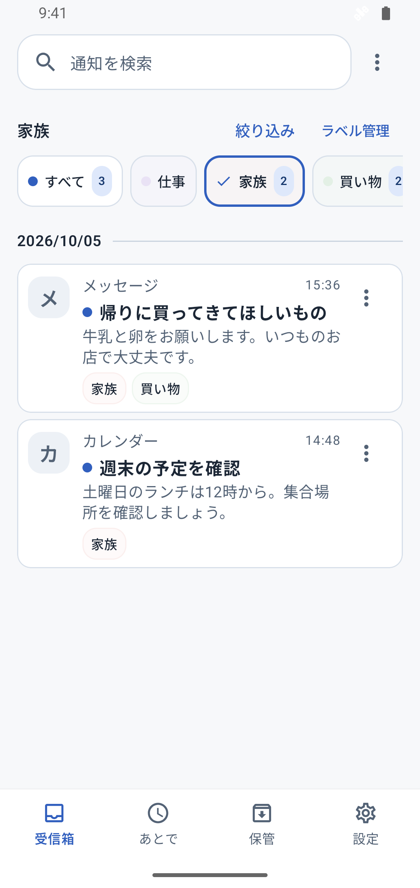
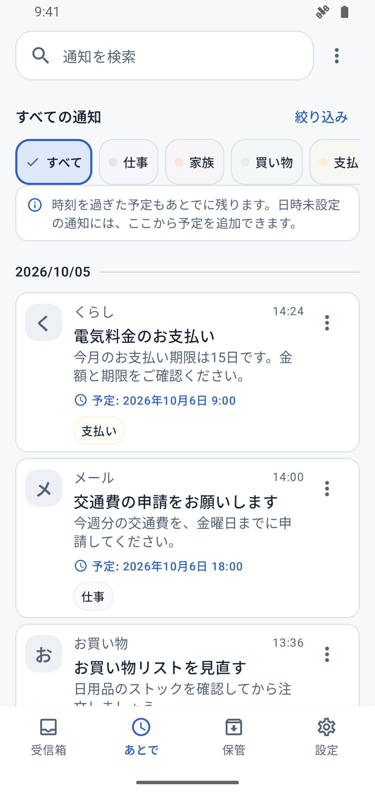
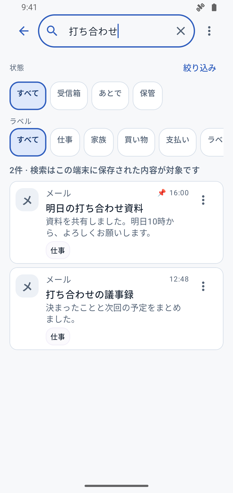
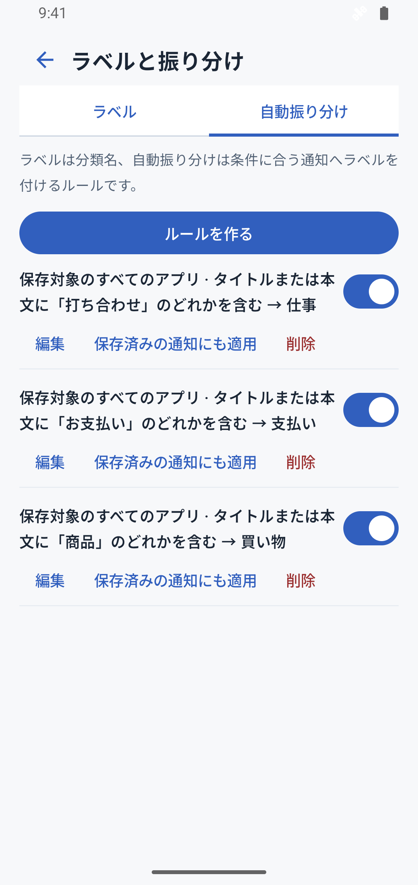

帰り道、
家族の用件だけ確認。
「家族」ラベルを選んで、
買い物の頼まれごとを見直す。

- 通知が届く
- 家族で絞る
- 用件を確認
仕事の連絡も、買い物の用件も。
選んだアプリの通知を残して、仕分けて、あとで確認。
全機能無料 · Android 12以上
選んだアプリの通知を保存
ラベルで、見たい通知に絞る
あとで確認。検索でも見つかる
届いた通知を、自分のタイミングで使えるように。
「家族」ラベルを選んで、
買い物の頼まれごとを見直す。

支払いのお知らせを「あとで」に残し、
見直す日時を設定。

画面内の通知はサンプルです。再通知は有効にする必要があり、省電力設定などにより遅れる場合があります。
「打ち合わせ」などの言葉で検索。
タイトル・本文・メモから、保存した通知を探せます。
アプリ・日付・ラベルでも絞り込み。

アプリやキーワードに合う新しい通知に、自動でラベル。

次にすることを通知に残す。
受信箱を整理。あとから検索も。

保存・検索・仕分けは端末内で。
通知の内容・メモ・ラベルを、運営者のサーバーに送信・保存しません。
保存するアプリや期間は、自分で設定。
保存開始後に取得できた通知が対象です。保存前に消した通知は復元できません。
保存開始後に取得・保存できた通知は、Androidの通知欄から消したあとも見直せます。保存前に消した通知は復元できません。OSが保護する通知など、本文を取得できない場合もあります。
通知の内容・メモ・ラベルは端末内で管理し、運営者のサーバーに送信・保存しません。自分で履歴を書き出す場合は、選択した保存先にファイルが作成されます。任意の閲覧ロックで、生体認証や端末の画面ロックによる閲覧保護も設定できます。閲覧ロックは保存データを暗号化する機能ではありません。
確認したい日時を設定し、再通知を有効にすると、指定時刻以降に見直すきっかけをお知らせします。通知表示の許可が必要です。省電力設定などにより遅れる場合があります。
通知ポスト内での既読や整理は、元のアプリの既読状態を変更しません。
すべての機能を無料で利用できます。Android 12以上に対応しています。
全機能無料 · Android 12以上